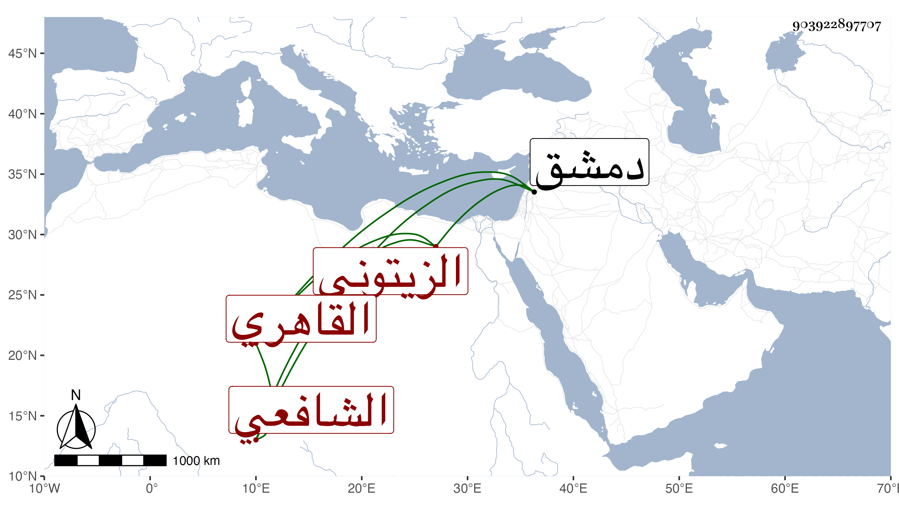

0902Sakhawi.DawLamic.ITO20230111-ara1.EIS1600.903922897707
Biography ID: 903922897707
1066
محمد بن أحمد بن عبد الله بن محمد بن عيسى التقي بن الولوي بن الجمال الزيتوني الأصل القاهري الشافعي سبط كريم الدين الهيثمي الماضي وكذا أبوه وجده ويعرف كهما بابن الزيتوني . ولد كما قاله لي في رجب سنة أربع وأربعين وثمانمائة ونشأ في كنف أبويه فحفظ القرآن وكتبا منها البهجة فيما أظن وأسمعه أبوه على شيخنا وغيره وأخذ الفقه عن الشرف المناوي وغيره وناب في القضاء وجلس بحانوت باب الشعرية وشرع في عمارة دار تجاه جامع الطواشي فما نهض لإكمالها مع استدانته لها ولغيرها وإتلافه على أبويه الكثير ولم يحصل على طائل سيما بعد موتهما بحيث سافر لدمشق فرارا من الديون فقطنها يشهد أو يقضي وليس بالمرضي .
